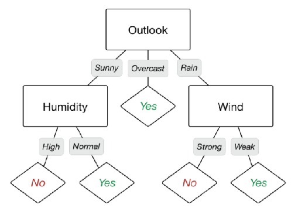
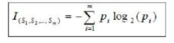
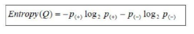
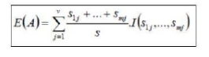
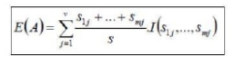

Decision Tree
Apa itu Decision Tree?
Decision Tree (Pohon Keputusan) adalah pohon dimana setiap cabangnya menunjukkan pilihan diantara sejumlah alternatif pilihan yang ada, dan setiap daunnya menunjukkan keputusan yang dipilih. Decision tree biasa digunakan untuk mendapatkan informasi untuk tujuan pengambilan sebuah keputusan. Decision tree dimulai dengan sebuah root node (titik awal) yang dipakai oleh user untuk mengambil tindakan. Dari node root ini, user memecahnya sesuai dengan algoritma decision tree. Hasil akhirnya adalah sebuah decision tree dengan setiap cabangnya menunjukkan kemungkinan sekenario dari keputusan yang diambil serta hasilnya.
Nama lain dari decision tree adalah CART (Classification and Regression Tree). Dimana metode ini merupakan gabungan dari dua jenis pohon, yaitu classification tree dan juga regression tree. Untuk memudahkan, berikut ilustrasi dari keduanya.

Tahapan Decision Tree
-
Konsep Decision Tree
-
Algoritma dalam Decision Tree
-
Konsep Data Dalam Decision Tree
-
Proses Dalam Decision Tree :
a. Proses Mengubah Data Menjadi Tree
b. Ukuran untuk Memilih Split Terbaik
c. Entropy
d. Information Gain.
Kelebihan dan Kekurangan
Kelebihan Decision Tree :
- Daerah pengambilan keputusan yang sebelumnya kompleks dan sangat global, dapat diubah menjadi lebih simpel dan spesifik.
- Eliminasi perhitungan-perhitungan yang tidak diperlukan, karena ketika menggunakan metode decision tree maka sample diuji hanya berdasarkan kriteria atau kelas tertentu.
- Fleksibel untuk memilih fitur dari internal nodeyang berbeda, fitur yang terpilih akan membedakan suatu kriteria dibandingkan kriteria yang lain dalam nodeyang sama. Kefleksibelan metode decision tree ini meningkatkan kualitas keputusan yang dihasilkan jika dibandingkan ketika menggunakan metode penghitungan satu tahap yang lebih konvensional.
- Dalam analisis multivariat, dengan kriteria dan kelas yang jumlahnya sangat banyak, seorang penguji biasanya perlu untuk mengestimasikan baik itu distribusi dimensi tinggi ataupun parameter tertentu dari distribusi kelas tersebut. Metode decision tree dapat menghindari munculnya permasalahan ini dengan menggunakan criteria yang jumlahnya lebih sedikit pada setiap nodeinternal tanpa banyak mengurangi kualitas keputusan yang dihasilkan.
Kekurangan Decision Tree :
-
Terjadi overlap terutama ketika kelas-kelas dan criteria yang digunakan jumlahnya sangat banyak. Hal tersebut juga dapat menyebabkan meningkatnya waktu pengambilan keputusan dan jumlah memori yang diperlukan.
-
Pengakumulasian jumlah eror dari setiap tingkat dalam sebuah decision tree yang besar.
-
Kesulitan dalam mendesain decision tree yang optimal.
-
Hasil kualitas keputusan yang didapatkan dari metode decision tree sangat tergantung pada bagaimana pohon tersebut didesain.
Rumus
Rumus - rumus yang digunakan pada metode ini antara lain :
- Rumus untuk Memilih Split Terbaik :

- Rumus Entropy :

- Rumus Entropy tiap atribut :

- Rumus Information Gain :

Studi Kasus
Seorang pemilik toko HP ingin melakukan pemasaran dan pengiklanan terhadap produk - produk yang akan dijualnya. Namun ia bingung untuk menentukannya, dengan harapan kemungkinan penjualan HP nya bisa meningkat.
Kebutuhan
Sebelum memulai project sebaiknya lakukan hal - hal berikut, jika sudah silahkan bisa langsung menuju ke script program di bawah.
-
install bahasa pemrograman python, bisa anda download di sini
-
Dataset csv, bisa anda download datasetnya di sini.
-
Install numpy, matplotlib, pandas, pydotplus, graphviz menggunakan
pip:
pip install numpy
pip install matplotlib
pip install pandas
pip install pydotplus
pip install graphviz
Script Program
# mengimport library
import pandas as pd
from sklearn.tree import DecisionTreeClassifier
from sklearn.model_selection import train_test_split
from sklearn import metrics
from sklearn.metrics import accuracy_score
import seaborn as sns
from sklearn.tree import export_graphviz
from sklearn.externals.six import StringIO
from IPython.display import Image
from sklearn.tree import export_graphviz
import pydotplus
import numpy as np
# mengimport dataset Customer_HP.csv
data = pd.read_csv('Customer_HP.csv')
data.head()
data.info()
zero_not_accepted = [ID_Customer','Usia','Penghasilan','Kode HP']
# for col in zero_not_accepted:
# for i in data[col]:
# if i==0:
# colSum = sum(data[col])
# meanCol=colSum/len(data[col])
# data[col]=meanCol
for col in zero_not_accepted:
data[col]= data[col].replace(0,np.NaN)
mean = int(data[col].mean(skipna=True))
data[col] = data[col].replace(np.NaN,mean)
X = data.iloc[:,0:3]
y = data.iloc[:,3]
# build model & train data
X = data[['ID_Customer','Usia','Penghasilan','Kode HP']]
y = data['Jenis Kelamin']
# split data
X_train, X_test, y_train, y_test = train_test_split(X, y, test_size = 0.3, random_state=0)
# melakukan prediksi data set
clf = DecisionTreeClassifier(criterion="entropy", max_depth=4)
clf = clf.fit(X_train,y_train)
y_pred = clf.predict(X_test)
# feature scaling
feature_cols = [''ID_Customer','Usia','Penghasilan','Kode HP']
dot_data = StringIO()
export_graphviz(clf, out_file=dot_data,
filled=True, rounded=True,
special_characters=True,feature_names = feature_cols,class_names=['B','R','L'])
graph = pydotplus.graph_from_dot_data(dot_data.getvalue())
graph.write_png('a.png')
Image(graph.create_png())
Penjelasan Script
- Line 2 - 13 mengimport library
- Line 16 - 17 mengimpor dataset Customer_HP.csv
- Line 19 - 34 menyesuaikan kolom yang ada pada dataset
- Line 37 - 38 membuat data training
- Line 41 - 42 memisahkan data
- Line 45 - 47 melakukan prediksi data set
- Line 49 - 50 melakukan feature scaling
- Line 52 - 58 menampilkan hasil graphics (tree)
Kesimpulan
Jadi decision tree membagi data-data ke dalam beberapa kelompok secara bertahap. Pembagiannya dimulai dari keputusan pertama. Hasil dari keputusan pertama digunakan untuk mengambil keputusan kedua. Hasil dari keputusan pertama dan kedua, digunakan untuk mengambil keputusan ketiga. Begitu seterusnya. Jadi kita dapat mengambil rencana yang tepat untuk melakukan pemasaran ataupun pengiklanan HP terhadap customers tersebut.
Referensi
http://newbiegameku.blogspot.com/2014/07/pengertian-decision-tree.html
https://www.academia.edu/35688101/MAKALAH_KLASIFIKASI_DECISION_TREE